Einfaches Streudiagramm
Simple-Dot-Chart
Zusammenfassung
Das Streudiagramm ist ein statistisches Diagramm, das aus Datenpunkten besteht, die auf einer einfachen Skala gezeichnet sind. Es wird häufig als Ersatz für das Kreisdiagramm verwendet, weil es den Vergleich von Mengen vereinfachen kann. Dieses Tutorial erläutert, wie Sie ein einfaches Punktdiagramm erstellen.
- 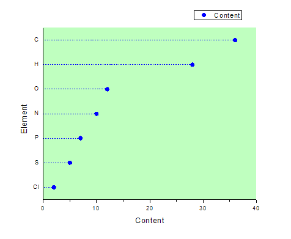
Origin-Version mind. erforderlich: Origin 2015 SR0
Was Sie lernen werden
Dieses Tutorial zeigt Ihnen, wie Sie:
-
- ein einfaches Punktdiagramm erstellen,
- X-Y-Achse austauschen
- den Dialog Details Zeichnung verwenden, um Ihr Diagramm benutzerdefiniert anzupassen.
Schritte
Beginnen Sie mit den folgenden Daten, die verschiedene Elemente in einer Verbindung darstellen:
| Element |
Inhalt |
| C |
36 |
| Cl |
2 |
| H |
28 |
| N |
10 |
| O |
12 |
| P |
7 |
| S |
5 |
- Erstellen Sie eine neue Arbeitsmappe über die Schaltfläche Neue Arbeitsmappe auf der Symbolleiste Standard und geben Sie die Daten ein:
- 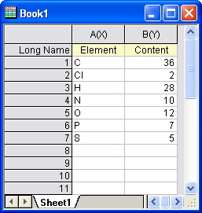
- Markieren Sie Spalte(A) und Spalte(B). Wählen Sie Zeichnen: Einfache 2D: Punktdiagramm im Hauptmenü, um ein Punktdiagramm zu erstellen, wie unten zu sehen:
- 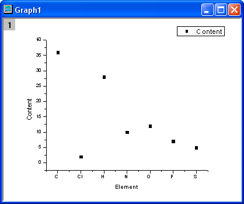
- Wählen Sie im Menü Grafik: X-Y-Achse vertauschen.
- 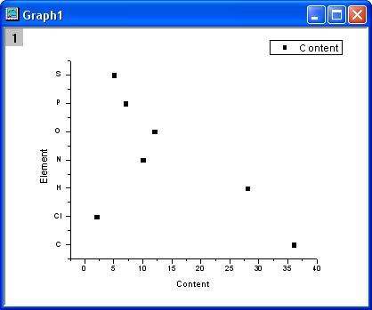
- Klicken Sie doppelt auf das Diagramm, um den Dialog Details Zeichnung aufzurufen, ändern Sie die Symbole und die Symbolfarbe auf den verschiedenen Registerkarten, wie im Folgenden zu sehen:
- 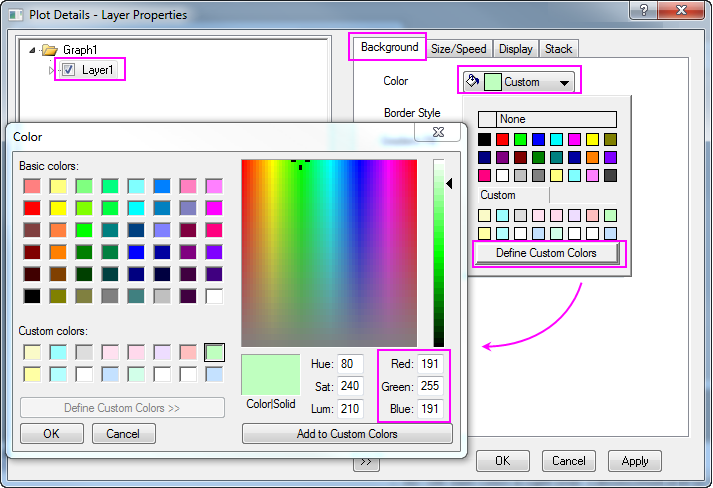
- 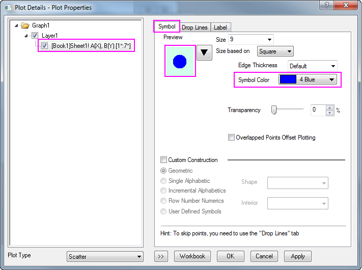
- 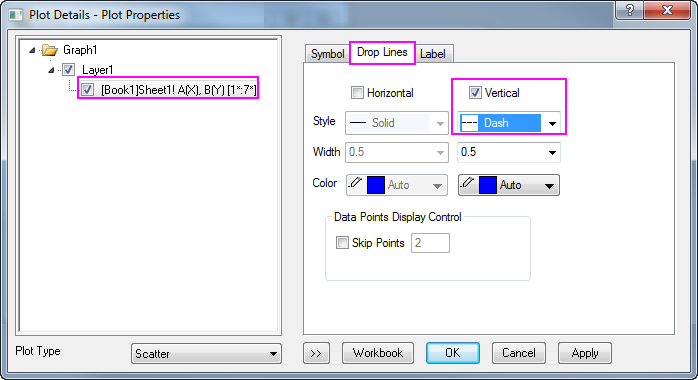
- Klicken Sie auf OK, um die Einstellungen zu speichern und den Dialog zu schließen. Das Diagramm sollte folgendermaßen aussehen:
- 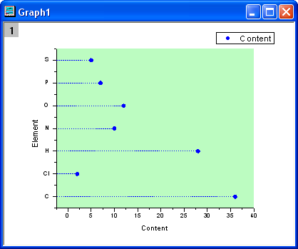
- Im nächsten Schritt werden die X- und Y-Achse zurückgesetzt. Klicken Sie doppelt auf die horizontale Achse, um den Dialog Achsen zu öffnen. Setzen auf der Registerkarte Skalierung die Option Von auf 0 und Bis auf 40. Setzen Sie das Inkrement auf 10.
- 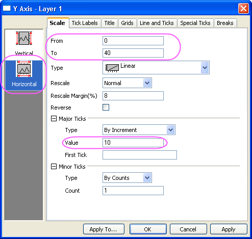
- Wechseln Sie zur Registerkarte Linie und Hilfsstriche, wählen Sie im linken Bedienfeld das Symbol Links und setzen Sie die Großen Hilfsstriche und Kleinen Hilfsstriche auf Keine. Klicken Sie auf OK, um die Änderungen zu speichern.
- 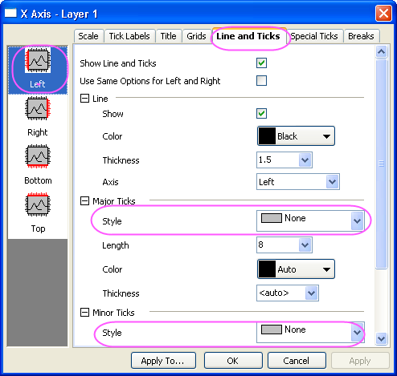
- Das fertiggestellte Punktdiagramm sollte folgendermaßen aussehen:
-
- 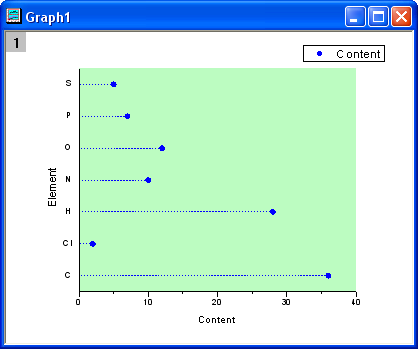